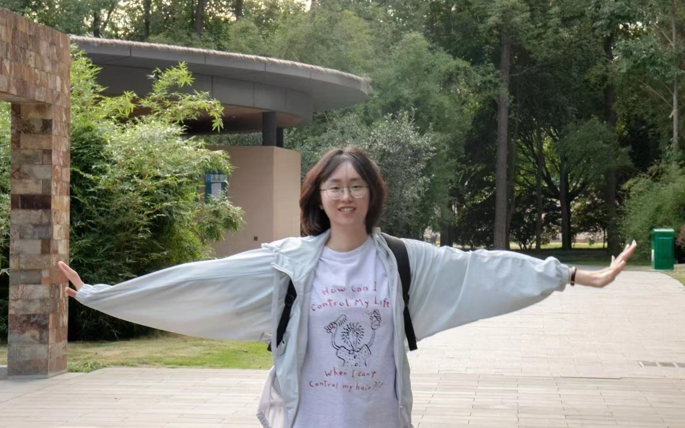
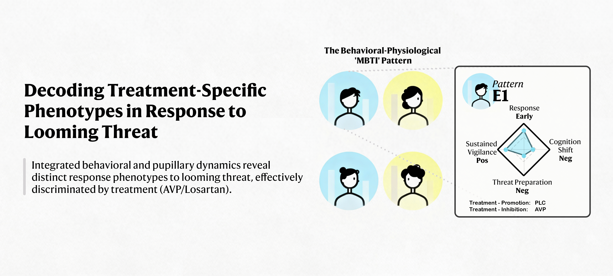
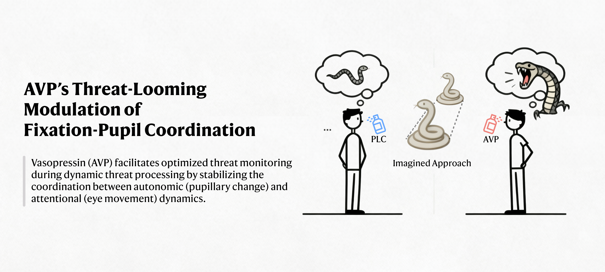
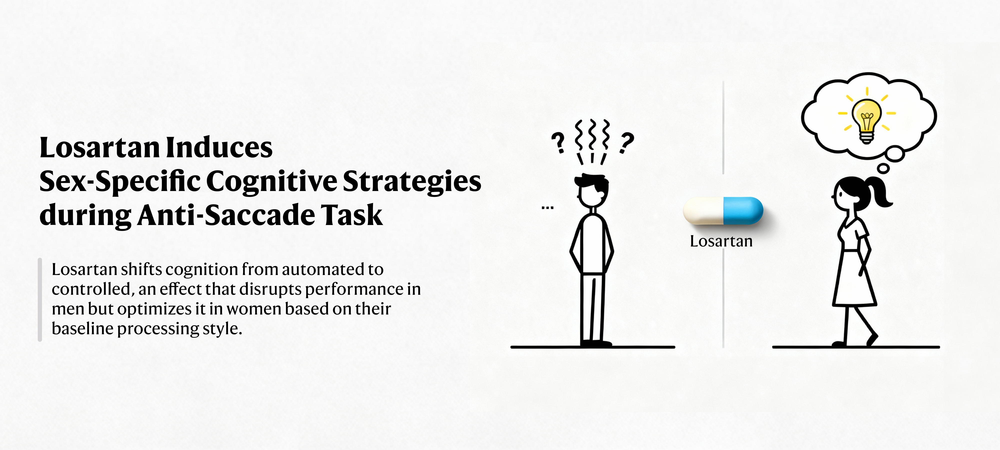

I am a master student at UESTC, advised by Prof. Benjamin Becker. My research focuses on pharmacological modulation of human fear and attention using eye-tracking and fMRI methods.
I am passionate about investigating neural and cognitive mechanisms underlying human behavior and mental processes.

Pharmacological Interventions in Fear and Attention Modulation
基于眼动追踪的药理学干预研究
This project investigates how vasopressin and losartan modulate human fear and attention responses through eye-tracking methodologies. The research comprises three complementary sub-studies that examine distinct aspects of threat processing and attentional control.
该项目通过眼动追踪方法探讨加压素和氯沙坦对人类恐惧与注意反应的调控作用，包含三个互补的子研究，分别考察威胁加工和注意控制的不同方面。
Neural Mechanisms of Looming Threat Processing
迫近威胁加工的神经机制研究
This ongoing fMRI study aims to reveal the neural mechanisms underlying looming threat processing. Using advanced neuroimaging techniques, we investigate how the brain processes and responds to approaching threats.
这项进行中的fMRI研究旨在揭示恐惧逼近过程的神经机制，通过先进的神经影像技术探讨大脑如何处理和应对迫近的威胁。


Under preparation for submission.

Submitted to Neuropsychopharmacology, under review.
View Preprint →Wang, J., Gan, X., Han, M., et al. (2025). Effects of exogenous oxytocin on human brain function are regulated by oxytocin gene expression: A meta-analysis of 20 years of oxytocin neuroimaging and transcriptomic analyses. Under review at Neuroscience and Biobehavioral Reviews.
View Preprint →Cheng, C., Tsang, M., Han, M., et al. (2025). Neural systems underlying autobiographical memory dysregulations in depressive and at-risk individuals: A neuroimaging meta-analysis. Under review at Psychological Medicine.
View Preprint →Li, Z., Shen, D., Han, M., Wang, Y., Qin, J., Becker, B., & Xu, X. (2025). Top-down rather than bottom-up attention processing mediates the pathway from childhood trauma exposure to depression in adolescents. Under review at Psychological Medicine.